Youtube 誰でも儲かります！
～顔出し・声だししないのに何故？！
アフイリエイトより簡単に稼げるユーチューブ動画
もくじ
はじめに
【１】Youtubeの魅力
【２】Youtubeは不労所得
・不動産所得や
・株式などの配当金
・年金
・銀行などの利息
・書籍などの印税
・音楽販売
・デジタル販売
・ブログやホームページなどの広告収入
・アフィリエイト
【３】儲けるYotubeの手順
【４】これを真似れば誰でも稼げる
・ペット撮影１動画で２万円
・本で１動画で４７万円
・猫を撮影だけ１動画で２４４万円
・顔出し声だしなし１動画で２７万円
・おもちゃで１動画で３３万円
・お絵かきツールで１動画で１８万円
・まとめ動画で１動画で２５万円
・情報動画で１動画で５万円
・おもちゃ遊びで１動画で１６万円
・噂話の文字動画 １動画で７万円
・粘土で遊んで１動画で８２万円
・ぬいぐるみで遊んで１動画で６万円
・ごっこ遊びで１動画で９万円
・面白映像で１動画で４５万円
・チョコレートとおもちゃで１動画で２３万円
・おもちゃで遊んで１動画で３０万円
・ふろくで遊んで１動画で２２万円
【５】資金不要、顔出しなしで手っ取り早く稼ぐ
【６】あなたの儲かるジャンルを決める
【７】動画をアップロードセット
【８】動画再生数を伸ばすには、ここが重要！
【９】再生数を大幅に伸ばすツール
【１０】再生数を伸ばすテクニック
【１１】見落とさないで！この設定は必須です！
【１２】チャンネル登録や再生を伸ばす禁断の方法
【１３】動画をアップロードする期日を気をつける
【１４】再生数を伸ばすアップロードの時間帯
【１５】ネタを考えなくていい！真似するだけ！
【１６】おわりに
【１７】特典（おまけ）
・これで簡単に継続
・あなたの動画が再利用されていたりなど
・動画などのツール
・本書解説でアップロードの仕方などで分からない場合
・チャンネル登録を自力で増やす
・チャンネル登録を増やす
・ここは気をつけて！Youtube
はじめに
Youtubeに動画を公開すれば、
お金がわんさか儲かるのは、
今や
誰もが知っている
ことでしょう。
まるで、打ち出の小槌や、
お金を引き寄せる熊手でも得たかのように、
１つ動画をアップロードして投げているだけで、
１万円、２万円と報酬が入ってくるのが、
Ｙｏｕｔｕｂｅ動画を公開する面白さです。
少しお尋ねしますが、
あなたはYoutubeに動画をアップロードしたことはありますか？
「ある」
と、
お答えされた
あなたにもう一つご質問をします。
あなたは、
いくらの収入を得ていますか？
Youtubeは、
再生回数 × 0.1円
で、お金を得られる仕組みです。
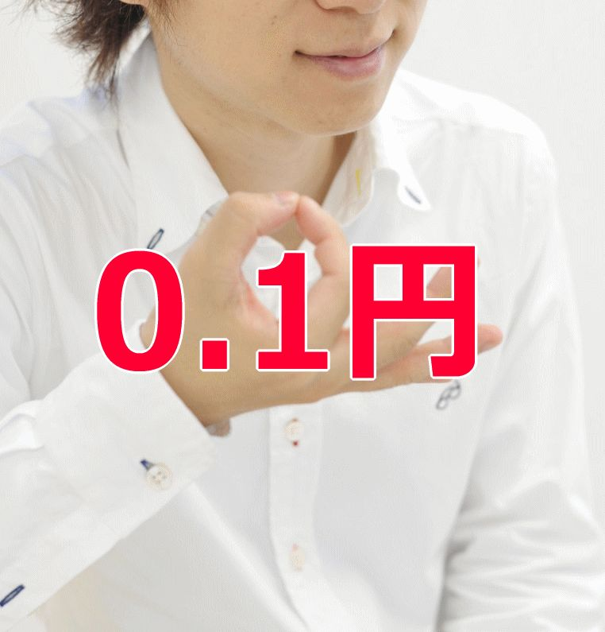
再生回数 × 0.1円
と、言うと
「0.1円？」
一定の人は、
「そんな儲からないじゃない！」
と、始める前から否定的に考えて
動かないことを選択する人もいます。
または、
巷の否定的な話を聞き
「儲かるのは一部の人だけだ」
と、本気で信じて
得られるはずの収入の機会をみすみす損をしていると言えます。
または、
「やったけど数円とか数百円しか儲からなかったんだ！」
という方もいらっしゃるでしょう。
そのような方は、
一言で言うと
「儲からないことをした」から儲からなかったのだと言えます。
変わったことをし過ぎた。
有名人を意識して真似した。
出来ない人の話を鵜呑みにした。
ほぼこれに当てはまるはずです。
「Youtubeは、誰でも儲かります！」
全くの素人が
4 か月前
に投稿した動画が
視聴回数
1,209,533 回
再生回数 × 0.1円
として、換算して
１動画
だけで、
12万953円
の収入！
顔出しや、変わったことはしていません。
この例では、
単にペットを撮影しただけのものです。
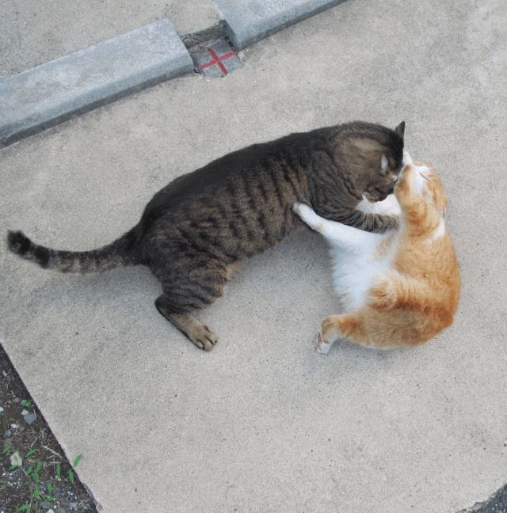
もちろんペットだけでなく、
日常の暮らしや、
ブログに書くような内容でも、
そのような再生回数はいくらでも叩き出せます。
１つの動画だけで、１０万円以上というのは、
有名Youtuberのように人気を集めていない
全くの素人では、
運も加味してしまうために、
度々ということではありません。
しかし、
最低でも
１つの動画で
、
１、２万円
くらいは稼ぎがなければ、
私はやる意味もないと思いますし、
長続きしないと思います。
Youtubeでお金を稼ぐには、
特技がなくてもできるのです。
Youtuberと呼ばれる、
有名人になりたい方はともかく、
普通の人は、
今ある仕事のプラスの
副収入
や、
お小遣い
稼ぎ、
または
老後資金
など、
「自由に使えるお金が入れば良い。」
という考えが圧倒的に多数のはずですから、
そのような方にあてて、
素人の方でも
今日から稼ぎ始めることができるやり方を執筆いたしました。
もちろん法律に触れるようなことでははありません。
本書では、
既にやっている人や、
今からやってみようという方も
この本からもっと稼ぐ方法を得られるはずです。
【１】Youtubeの魅力
Youtubeの魅力は、
やはり放置していても「稼げる」という点でしょう。
一度、動画をアップロードしてしまえば、
後は、全国、全世界のユーザーが視聴する可能性がありますので、
動画をアップロードしておけば、
放置していても、
その動画がいつでも稼ぎ続けてくれるチャンスがあるということです。
しかも、Youtubeの利用者は、
世界の人口で、「5人に1人」に当たる、
月間15億人もの人々が利用していますので、
それだけ視聴される確率があり、
稼ぐチャンスがあるという、
誰もが知っているサービスです。
通常では、
何かの物品や、デジタル商品を販売したりして、
お客様が気に入ってくれて、注文をしてくれたら、
収入が得られるという形態ではなく、
Youtubeの場合は、
何らかの動画データを
Youtube上にアップロードして、
世界の何処かの人が視聴してくれることによって、
再生回数 × 0.1円
の収入が発生するという形態ですので、
視聴者もお金を支払うわけではないために、
通常のように、
物などを手渡して、その代価である収入を受け取るための
行動をしなければ成立しないものではありませんので、
誰でも動画さえアップロードしておけば、
簡単に収入になる仕組みという
大きな魅力があります。
例え、
病気で寝たきり
だったとしても、
何らかの動画さえアップロードが可能ならば、
寝たきりでも活動ができ、
そしてその収入を得ることが可能なのが、
Youtubeです。
【２】Youtubeは不労所得
Youtubeは不労所得と考えられます。
不労所得といえば、
通常
不動産所得や
株式などの配当金、
年金、
銀行などの利息、
書籍などの印税、
音楽販売、
デジタル販売、
ブログやホームページなどの広告収入
アフィリエイト
など、
他にもありますが、
一般的にお勤めの方の範囲で考えると、
この辺りが、
不労所得として思い浮かぶのではないでしょうか？
では、この中で
一番効率がよく、
一番稼げて、
一番不労所得として
成り立つものは？
ということを考えながら､
順番をつけてみてください｡
･････
面倒臭いですよね。。。
しかし、その「面倒くさい」という衝動が、
実は殆どの人が「稼げない」
ひとつの大きな理由でもありますが・・・
その話はここでは割愛するとしまして、
まずは一つ一つを紐解いてゆきたいと思います。
・不動産所得。
不動産で賃貸収入を得るために、
銀行から借ります。
目指すところは、一棟物ですが、
まずは小さな範囲から考えます。
５００万円くらいの
格安中古のワンルームマンションや、
一戸建ての家を購入したとします。
マンションの場合、
管理費が毎月家賃のように支払いが発生します。
借り手がすぐについてもらうよう内装などの修繕もします。
一戸建ての場合は修繕費がかかります。
プラス固定資産税と、得た収入に対しての所得税などもかかります。
月１０万円で貸したとした場合、
５年くらいで元が取れると考えてしまう人も多いです。
そしてテクニック教材にもそのようなアバウトに書かれていることが多いです。
その上、「５年経過すると後は自分のもの」という考えで、
「土地や物は逃げない」ということで、
資産が増えるというザックリとした感覚で教えているのも確かです。
しかし、仮に５年で償却出来て、
晴れて自分の物になったとして、
それからは永遠と自分に賃料が入り続けるというと、
そうではありません。
５年経てば、それなりに老朽化していますから、
また修繕をします。
マンションのケースですと、
近隣に新築物件が建ったり、
５年あれば状況は様変わりします。
結局は、時間の経過と共に賃料を値下げしなければ、
借り手がなかなかつかない物件になります。
得る収入についても、
もしも銀行が金利０円で融資をしてくれたとしても、
もしも修繕がずっと発生しない物件としても、
賃料１０万円のうちの２０％が税金です。
５００万円あれば違うビジネスもできる筈ですが、
８万円を受け取りつつ、
償却されるまでの期間、何年も待ち続けるような状態です。
返済し終わるまでは、あくまで銀行から借りているものなのですが、
銀行から借りたお金を自分の収入と思ってしまう人が多く、
失敗するケースが目立ちます。
総合的に考えると、
不動産収入も不労所得の範囲ではありますが、
借り手探しに専門業者を雇ったり、
メンテナンス修繕費、
など
さまざまな手間や時間を要します。
借り手が付かないときは、メンタルにも影響が出ます。
何億か遊ばせている資金があるならば、
不動産は土地を取れるので、面白い投資です。
・株式などの配当金。
株のケースでは、
１単元で、最低３０万円くらいは必要です。
それ以下の銘柄も探せばありますが、
あまり安定した会社はないように感じます。
３０万円に対して、
年間どのくらいの配当金が入るかというと、
１～２万円くらいが平均だといえます。
ザックリ１割りの３万円の配当が年間あったとしても、
元を受けるには、１０年と少しかかります。
そして株価は常に値動きをします。
買った時よりも高くなってくれれば良いですが、
安くなればメンタルに影響しますし、
安くなれば受け取れる配当金も下がります。
そして、企業というのは１０年もあれば、
さまざまな変化をしますし、
その会社が上場廃止になっていることも珍しくありません。
ただ、買うという行為だけで、
あとは特にすることもないのが特徴ですから、
遊ばせている資金が沢山あれば、
配当金狙いをおすすめします。
・年金、
銀行などの利息。
これらは、昔のように日本が豊かな時代ならばともかく、
今更説明する必要もありません。
特に年金は、これから先はどんどん少なくなると、
厚労省の「マクロ経済スライド」などがはっきりと示しています。
今の65歳となっている年金の受給開始年齢が、
将来的に70歳まで引き上げる計画もありますし、
貰える、もらえない、
当てにする、しないという問題ではなく、
税金として収めているものだと考えたほうがよいと思います。
・書籍などの印税。
印税生活に憧れる方も多くいらっしゃいますが、
書籍の場合、印税は１０％です。
私が今綴っている電子書籍ですと、３０％が印税で受け取れます。
アマゾンキンドルの場合、
７０％を受け取るように設定をすることは出来ますが、
その場合、無料で読めるようにしなければならない条件付きですから、
７０％印税にした場合、殆どのケース無料で読まれる結果になります。
そして、書籍などの印税ですが、
書籍を仮に一日で書き終わったとしても、
定価はせいぜい２０００円くらいまでの範囲です。
それ以上の何十万円という定価をつけても、個人の判断ですから構いませんが、
買っていただけなければ、印税はもちろん発生しません。
すると、一般的な流通価格帯に合わせる必要性があります。
そして、発売したとしても、
直木賞作家や、テレビの有名著名人、大手有名出版社など、
さまざまな出版者がいます。
１冊を１日で毎日書き上げて、
発売したとしても、
そう売れることはありません。
売れる理由も見当たりません。
１日１冊、２０００円で販売する図書を発売して、
仮に７０％の印税契約として、
無料で誰も読まず、お金を出して買ってくれたとすると、
１冊売れた場合、
ザックリと、日当が１４００円。
毎日、１０冊売れたら、
例えて言うならば、
警備会社の交通整理のバイト並みの収入を受け取れる計算です。
あくまで、毎日１冊を２０００円で発売したケースです。
また、電子出版など自費で行う場合は、
文章だけでなく、表紙のレイアウトやタイトルなど、
さまざまなことをする必要があります。
そして、もちろん、
毎日いろいろな大手企業や、大物作家が新作を発売していますので、
１冊発売した図書も、どんどん古くなり、埋もれて売れなくなってゆきます。
例えば、過去に世間で話題になったベストセラー図書をアマゾンなどで探してみるとよいでしょう。
中古で１冊１円などになっている筈です。
ブックオフなどの中古店ですと、１冊１００円くらでしょう。
そして、それらが売れたとしても、書いた本人には一円にもなりません。
書籍などは、
新人賞や直木賞などを受賞したり、
メディアで露出して有名人になるなどでなければ、
いくら本を書いても、
普通にアルバイトをしたほうが収入はいい筈です。
不労所得とは言えないと思います。
・音楽販売。
音楽も文章の分野と同じく、
無から「有」を生み出すものと思われがちです。
ただ、「音」の場合は、文章と違い創作に慣れた人ならば、
比較的短時間で一つの作品を作ってしまえますので、
物理的に考えてみても、
毎日１つの作品をリリースして、毎日１０本以上確実に売れる見込みがあるならば、儲かります。
しかし、本を書く作家と同じく、「音」の分野も
様々な有名音楽家や歌手などが存在しますので、
そう甘くはありません。
やはり何処かにオーディションを受けて、デビューしなければ、
いくらいい作品が作れる実力派としても、埋もれてしまい、
飯すら食えないというのが、
普通です。
売れるまでは、アルバイトに精を出しつつということは、良く聞く話です。
そして、本と同じく新しい作品が、
雑草のように毎日どんどん出てきますので、
１つ新曲を出しても、どんどん古くなり、埋もれて売れなくなってゆきます。
・デジタル販売。
数年前に一時流行った情報商材や、
デジタル写真や、アプリ、
デジタルに出来るものならば、
ダウンロード販売が可能ですから、
不労所得が成立するという話が巷ではよくありますが、
ここまでの説明の中の、
本や音楽などと同じように、
新しいものが次から次へと生まれますので、
実際には不労所得には成りえません。
人のニーズは、新しいものを好み選びます。
また、仮に相当ニッチなものを見つけ、
一時期爆発的に売れたとしても、
そのようなものは、
ネット上ですぐに気づかれますので、
次の模範商品が、何処かの誰かによって
すぐにリリースされ、
競争になります。
そして古いものや、性能の悪いものは淘汰されてゆきます。
デジタル販売に於いては、
本や音楽系とは違い、
言い値で価格帯を付けても、
それなりに売れる分野ですので、
毎日毎日いくつか新作を出せるスピードがあれば、
儲かります。
しかし、言い値といっても、
個々の財布の中身には当然上限がありますので、
常識範囲内の設定にしなければ、
結果売れなければ、収入はゼロです。
・ブログやホームページなどの広告収入
世間に話題になるような人気ブログや、
沢山の人が参考にするホームページを構築できるならば、
広告を募って広告収入を得られます。
広告収入は、限りなく不労所得に近いものです。
しかし、広告主にも予算が限られますので、
永遠に広告料が入り続けるのか？
というと、
そうではありません。
また、広告を募る形態にもよりますが、
広告主との打ち合わせなど、広告費の相談など、
様々な作業がありますので、
これも不労所得というよりかは、
ビジネスという感じです。
また、ブログのように自身が人気があって、
ということならば、
なかなか真似をされることもなく、
オンリーワンで進めてゆけます。
が、しかし、
人気があってという形ではない形態、
例えば、料理や食べ歩きのホームページを作りこみ、
一躍ヒットしてアクセスが伸び、
広告主が募れて儲かるようになってきたとしても、
これも、本や音楽、デジタルなどと同じように、
「売れていると分かったら」、
模範する真似が沢山出現します。
そして広告主は、出来るだけ大きな企業体や、信用ある組織で且つ、安価なほうに移ります。
今の時代、どんなことをしても、
インターネット上のことでしたら、
検索で瞬時に探せますので、
いくらバレないように稼ごうとしても必ず真似がどんどん出てきて、過当競争に陥ってゆきます。
そして、競争の最終地点は価格勝負になり、販売価格はゼロに近づいてゆきます。
街角でお店を開くようなアナログと違い、
インターネット上でオンリーワンでやるならば、
ファンを集め人気者にならなければ困難です。
よって、広告収入は不労所得としては、難しい案件だといえます。
・アフィリエイト
アフィリエイトは、ほぼ不労所得は成立しません。
なぜならば、広告主にも予算の限りがあります。
一度広告を貼り付ければ、長くその広告から収入得られるよりも、
ほとんどのケース短期間で広告がストップされます。
アフィリエイトは、ビジネスという分野になります。
ですから、やり続けなければなりません。
ただ、ビジネスで考えた場合、
効率は良いといえます。
なぜならば、
収入を得るための商品が、ほぼ無限に扱えるからです。
先ほどまでの話を例にしますと、
通常は過当競争に陥り、最終的には売れなくなるか？
新しいものが次々と生まれ、自分のものが古くなり埋もれるか？
ということが問題点でしたが、
アフィリエイトの場合は、
その２点の問題点は、アフィリエイト広告主に降りかかるリスクというだけです。
だから、いつまでも永遠に広告主も広告を出していられないだけですが、
アフィリエイトをする側は、それこそ新しい商品、新しい商品を次々と扱うことができますので、
商品開発などの手間などもありません。
力を入れていた商品が淘汰される頃には、
また次々と新しい商品を扱えばよいわけですから、
無限に商品を扱えますので、ビジネスにはとても適しています。
しかし、絶対に不労所得にならないわけでもありません。
アフィリエイト広告の出稿日を確認してみると、とても長く出稿し続けているサービスもあります。
特に１クリック数円という形態のものが多く、これらの広告でしたら不労所得には近い話になるといえます。
また、楽天やアマゾンのように、一度リンクを通せばクッキーによって、別の物が売れたとしても報酬が発生するタイプも、
その企業がサービスを終了したり、規約の変更がない限りは、不労所得に近いといえるでしょう。
しかし、やはり物販ということから、
買ってお金を払う人がいて、はじめて報酬が発生しますので、
結果売れなければ、収入はゼロです。
ここまで、一つ一つを簡単に紐解いてみましたが、
これらを総合すると、
Youtubeというサービスが、
不労所得として向いていて、
且つ、
視聴者が何かを買ったりなど、お金を支払うわけではなく、
単に動画を再生するだけの仕組みですから、
如何に収入を得やすいサービスか？
ということがご理解いただけましたでしょうか？
しかも、
スキルや特技、
自己資金がなくてもできるのが、
Youtubeの最大の利点です。
【３】儲けるYotubeの手順
Youtubeをはじめるには、
まずはGoogleのアカウントを作る必要があります。
こちらのＵＲＬから作成します。
https://accounts.google.com/SignUp?hl=ja
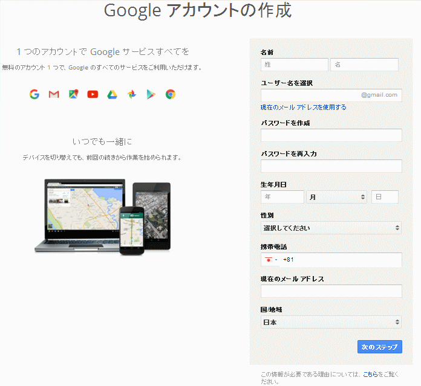
そして、Googleアカウントを作りましたら、
次はYoutubeに移ってください。
https://www.youtube.com/
右上
の辺りに、「ログイン」というリンクがありますので、
先ほどのGoogleアカウトントを使って、
Youtubeにログインします。
次に、
左上の Youtubeのロゴの横の 三本線をクリックします。
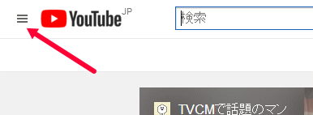
次に
マイチャンネルをクリックします。
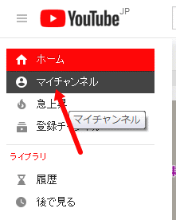
次の画面で
チャンネルを作成というボタンをクリックします。
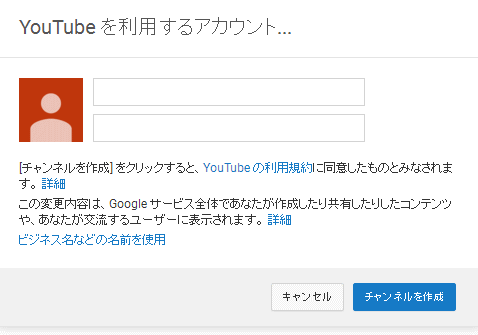
これで、
動画が公開できるチャンネルができました。
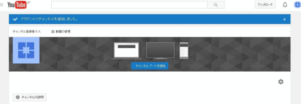
【４】これを真似れば誰でも稼げる
この章では、
どんなジャンルで、
どんなことをすれば、
顔出ししたり、
特別なスキルがなくても
稼げるのか？
参考事例を見ながら、
あなたにも
真似れば
「
できる
」「
できそう！
」
ということを
まずは、感じていただき、
今後、あなたが作る動画を
「何」をメインにアップするのか？
を
決定する材料にしていただきたいと思います。
・ペット撮影１動画で２万円
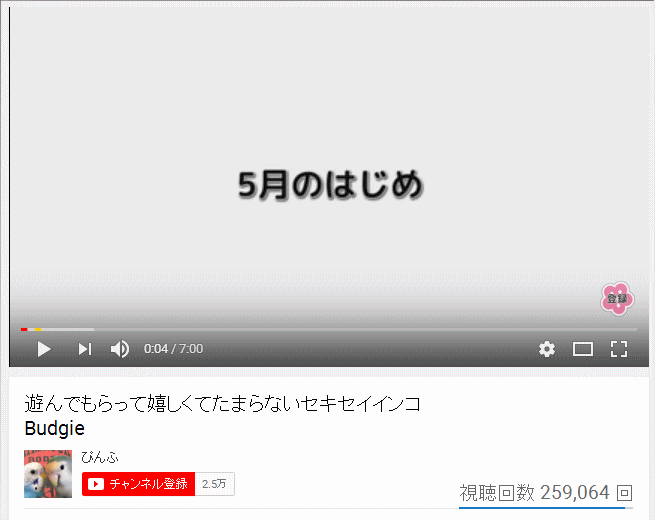
ペットを飼っているならば、
このような動画を参考に、
ペット動画をすれば、
顔出しなくても
再生回数が伸びます。
視聴回数が、259,064回
ですから、
１再生が０，１円と換算して、
単純にこの
一つの動画
だけで、
2万5906円
の収入が入っているということです。
・本で１動画で４７万円
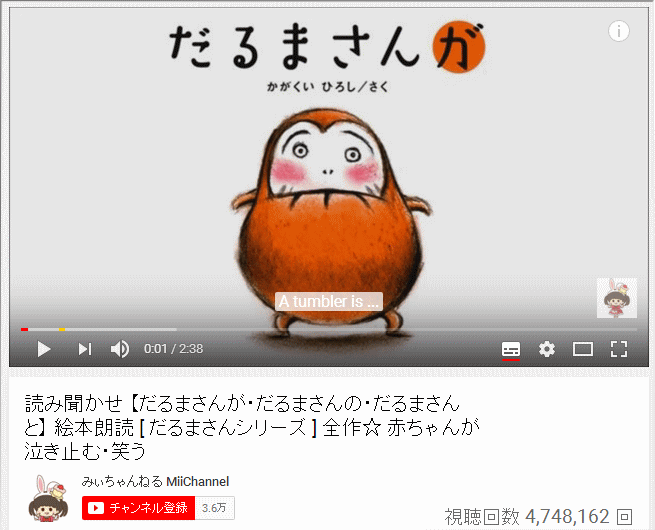
図書館に行けば、
この手の絵本はあります。
顔出しはありませんが、
読み聞かせですから、
声は使います。
声も出したくない方は、
ボイスチェンジゃーなどで声を変更すれば、
声だしはありません。
視聴回数が、4,748,162回
ですから、
１再生が０，１円と換算して、
単純にこの
一つの動画
だけで、
47万4816円
の収入が入っているということです。
・猫を撮影だけ１動画で２４４万円
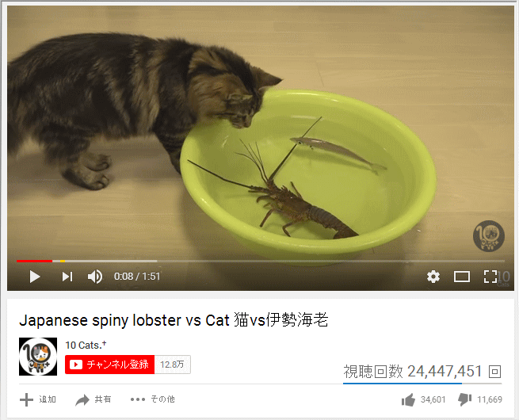
これも、
ペットを撮影した動画です。
特に「猫」は、
再生回数がよく伸びる傾向にあります。
もしも、あなたが猫を飼っていらっしゃるなら、
猫の動画をアップしてみてはいかがでしょうか？
視聴回数が、24,447,451回
ですから、
１再生が０，１円と換算して、
単純にこの
一つの動画
だけで、
244万4745円
の収入が入っているということです。
・顔出し声だしなし１動画で２７万円
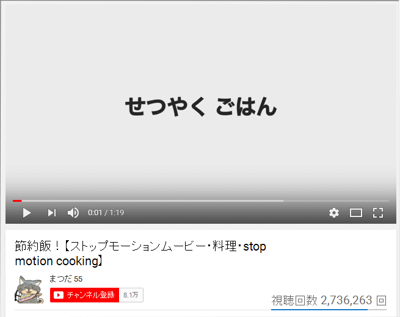
これも顔出し、
声も出していません。
ちょっとしたアイデアが沸く人は、
こういった動画を楽しんで作ってみるのも良いでしょう。
視聴回数が、2,736,263回
ですから、
１再生が０，１円と換算して、
単純にこの
一つの動画
だけで、
27万3626円
の収入が入っているということです。
・おもちゃで１動画で３３万円
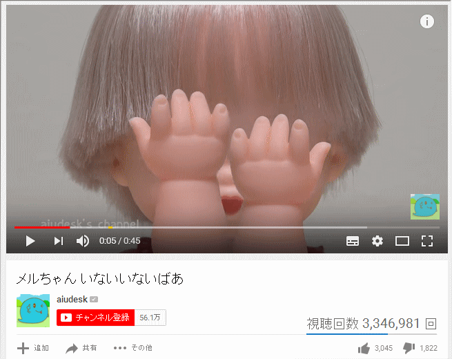
おもちゃを使って、
ただの一人遊びのような動画です。
あなたに子供がいて、おもちゃが埃をかぶっているなど、
または身近な友達の子供のおもちゃを借りるなどして
動画撮影してみてはいかがでしょうか？
視聴回数が、3,346,981回
ですから、
１再生が０，１円と換算して、
単純にこの
一つの動画
だけで、
33万4698円
の収入が入っているということです。
・お絵かきツールで１動画で１８万円
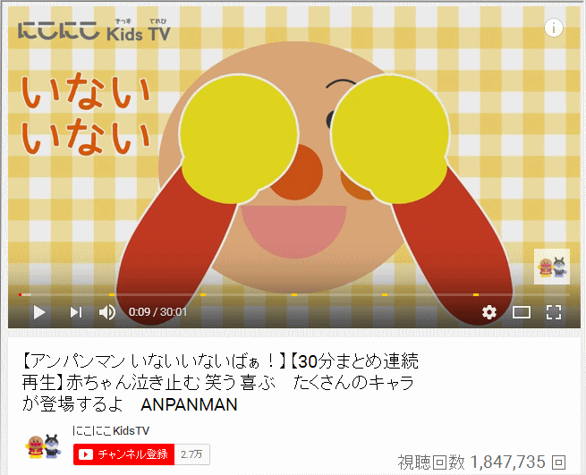
ペイントツールや、
お絵かきツールなど、
標準で装備されているものを使って、
人気キャラクターを書いて、
動画にするだけです。
特に、物や生き物でもありませんので、
何かの費用は発生していません。
視聴回数が、1,847,735回
ですから、
１再生が０，１円と換算して、
単純にこの
一つの動画
だけで、
18万4773円
の収入が入っているということです。
・まとめ動画で１動画で２５万円
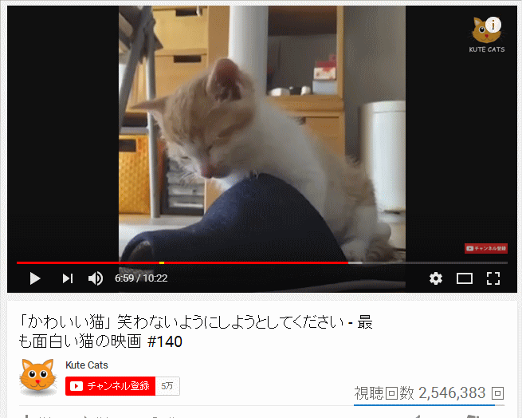
こちらは、まとめサイトのような形で、
かわいいペットの動画を紹介しています。
顔出し、声だしもありません。
視聴回数が、2,546,383回
ですから、
１再生が０，１円と換算して、
単純にこの
一つの動画
だけで、
25万4638円
の収入が入っているということです。
・情報動画で１動画で５万円
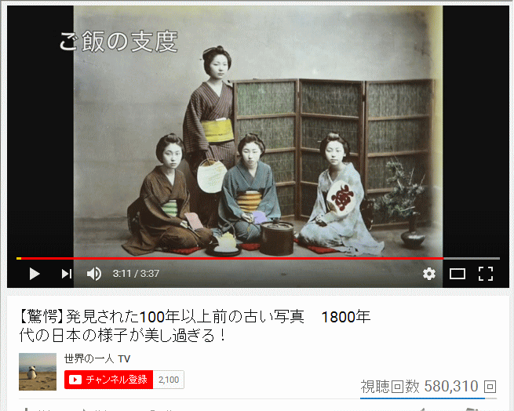
このように、
何か変わった情報を見つけて
紹介すれば、
動画になります。
顔出しも、声出しも必要がありません。
視聴回数が、580,310回
ですから、
１再生が０，１円と換算して、
単純にこの
一つの動画
だけで、
5万8031円
の収入が入っているということです。
・おもちゃ遊びで１動画で１６万円
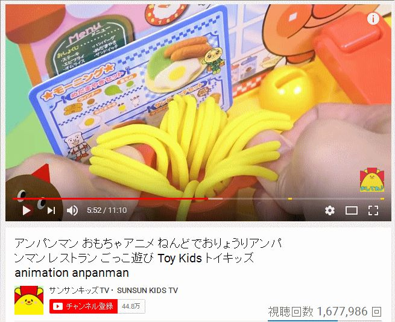
おもちゃで遊んでいる動画です。
顔出しも、声出しも必要がありません。
視聴回数が、1,677,986回
ですから、
１再生が０，１円と換算して、
単純にこの
一つの動画
だけで、
16万7798円
の収入が入っているということです。
・噂話の文字動画 １動画で７万円
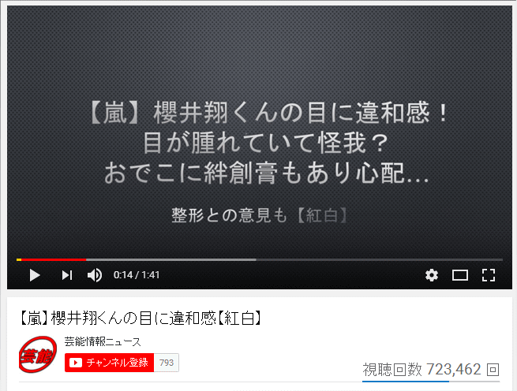
普段よく雑誌や週刊誌などを読んでいらっしゃる、
流行や噂話に敏感な方は、
このような動画を作ってみるのも稼げます。
これも、顔出しも、声出しも必要がありません。
そして、文字情報だけですから、
何か道具を準備したりなどもありません。
視聴回数が、723,462回
ですから、
１再生が０，１円と換算して、
単純にこの
一つの動画
だけで、
7万2346円
の収入が入っているということです。
・粘土で遊んで１動画で８２万円
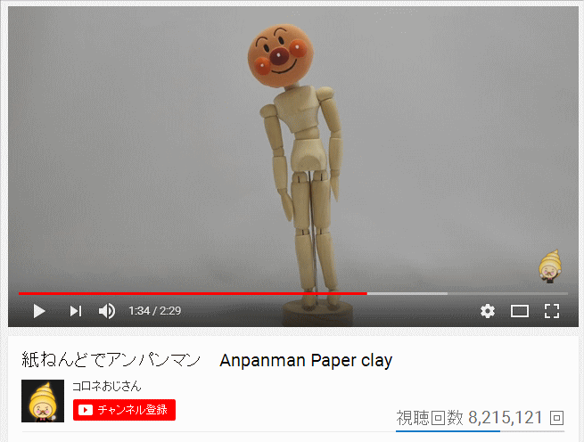
紙粘土などで、
人気キャラクターを作っている様子を
動画にしてみたり、
することで
再生回数が伸びます。
視聴回数が、8,215,121回
ですから、
１再生が０，１円と換算して、
単純にこの
一つの動画
だけで、
82万1512円
の収入が入っているということです。
・ぬいぐるみで遊んで１動画で６万円
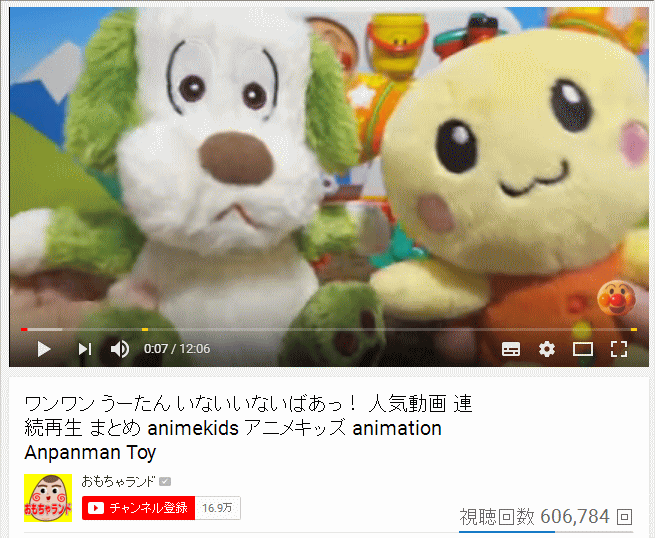
これも、おもちゃを使って
一人遊びのような動画を撮影しています。
視聴回数が、606,784回
ですから、
１再生が０，１円と換算して、
単純にこの
一つの動画
だけで、
6万678円
の収入が入っているということです。
・ごっこ遊びで１動画で９万円
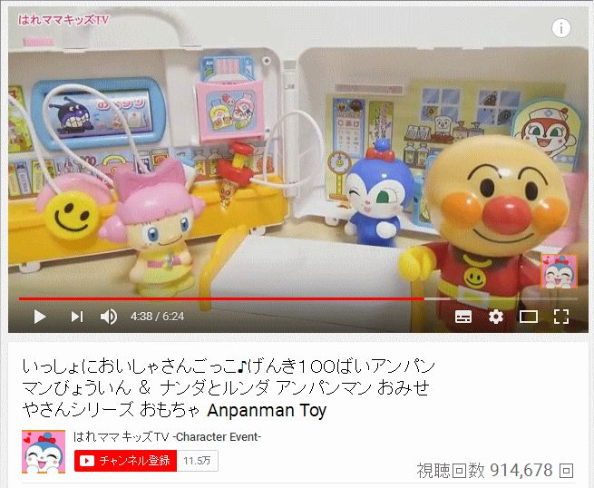
同じく、おもちゃで遊んでいる動画です。
視聴回数が、914,678回
ですから、
１再生が０，１円と換算して、
単純にこの
一つの動画
だけで、
9万1467円
の収入が入っているということです。
・面白映像で１動画で４５万円
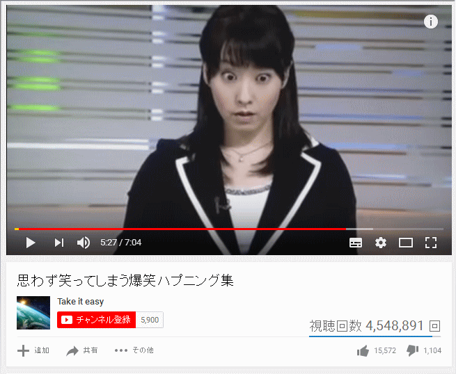
面白い番組を集めたものです。
しかしテレビ局などに許可を得ているのか？
不明ですが、
このようなものを参考に、
ご自身の私生活の中から、
ハプニング映像などを集めてみるというのも、
一つの方法です。
面白いものは再生が伸びます。
視聴回数が、4,548,891回
ですから、
１再生が０，１円と換算して、
単純にこの
一つの動画
だけで、
45万4889円
の収入が入っているということです。
・チョコレートとおもちゃで１動画で２３万円
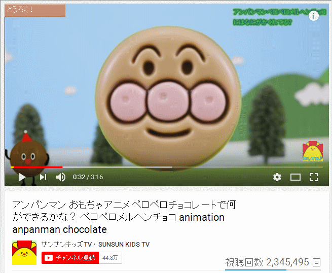
おもちゃで遊ぶ様子を撮影している動画です。
視聴回数が、2,345,495回
ですから、
１再生が０，１円と換算して、
単純にこの
一つの動画
だけで、
23万4549円
の収入が入っているということです。
・おもちゃで遊んで１動画で３０万円
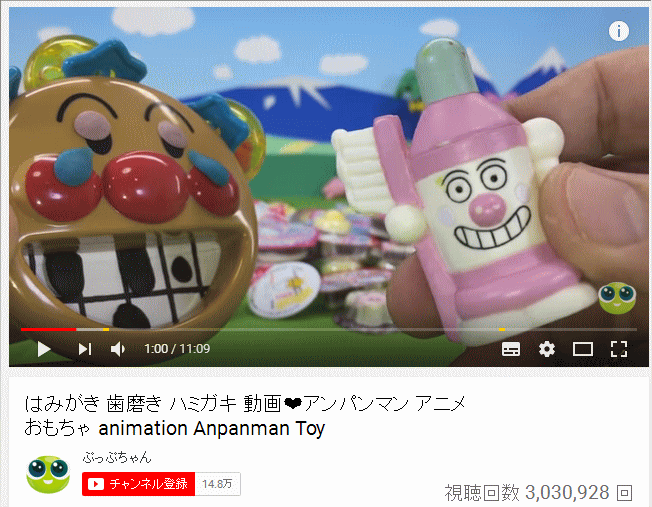
こちらも、おもちゃで遊んでいる動画です。
視聴回数が、3,030,928回
ですから、
１再生が０，１円と換算して、
単純にこの
一つの動画
だけで、
30万3092円
の収入が入っているということです。
・ふろくで遊んで１動画で２２万円
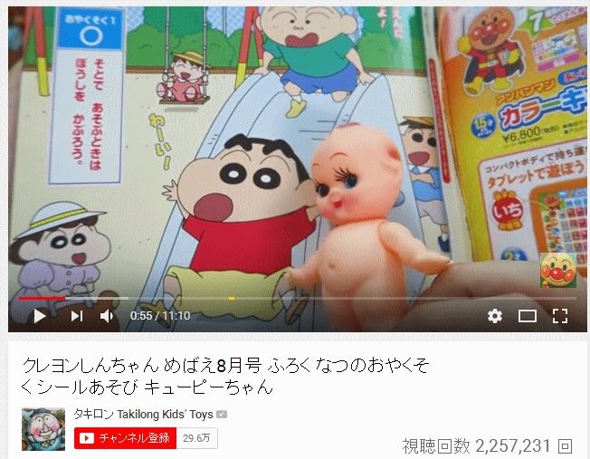
こちらも、おもちゃで遊んでいる動画です。
絵本と絡めて、一人遊びをしているのが斬新な動画です。
視聴回数が、2,257,231回
ですから、
１再生が０，１円と換算して、
単純にこの
一つの動画
だけで、
22万5723円
の収入が入っているということです。
以上。
17動画の中に、
あなたが「できそう！」と思える、
動画がいくつかあったと思います。
【５】資金不要、顔出しなしで手っ取り早く稼ぐ
資金不要でいくならば、
読み聞かせや、
噂話の文字情報などがおすすめです。
なぜ、おすすめかというと、
そもそも、
なぜ「絵本の読み聞かせ」などが
そんなに
再生回数が伸びる
のか？
ということを考えていただければ、
答えが出ると思います。
この答えは、
実は 「
キーワード
」です。
評判になっている人気の絵本や、
書店で新作として、平置きされている絵本、
または、昔から慣れ親しんでいる絵本。
これらのタイトルが、そのままキーワードなのです。
もしも、あなたがアフィリエイトや
ネットで副業を一度もしたことが無いという前提で、
キーワードの重要性について、これから少しご説明します。
スマホをはじめとし、インターネットは、
全て「
検索
」というものを使い、
何かを探して、視聴したり、情報を得たりします。
例えばあなたが、
水虫に悩んでいるとします。
水虫を自宅で治す方法を探した場合、
「水虫 治す」
「水虫 治療」
などで検索すると思います。
その「水虫」がキーワードということなのですが、
そもそも、なぜ「水虫」を検索するのか？
というと、「水虫」が
気になっている
からです。
それと同じように、
新作や話題になっているものなどは、
沢山の人が「気になっています」。
あなたが、興味なくて
気になっていなくても、
世間では
何処かの誰かが気になっています
。
気になっているから、検索します。
気になっている、気にすることが、
キーワードになるのです。
街で見かけた
広告
や、
ＣＭに映った
商品、
お店で見かけ
た、オススメのおもちゃなど、
人の目に飛び込んで、
気にさせています
。
だから、その言葉を使い、
検索する人がいるのです。
文字情報の動画も同じです。
目に付いた話題などをキーワードとして捉えて、
それで動画を作成すればよいのです。
例えば、
文字情報の場合は、
https://trends.google.co.jp/trends/hottrends
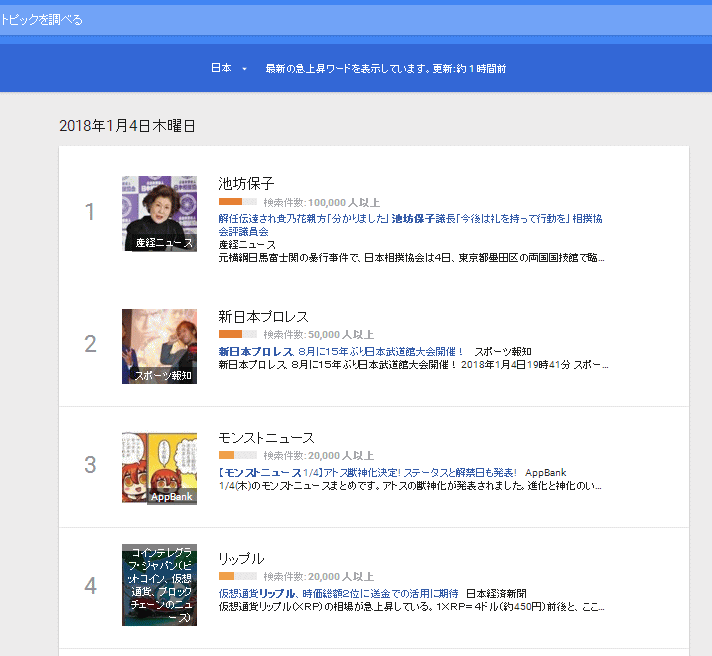
https://searchranking.yahoo.co.jp/
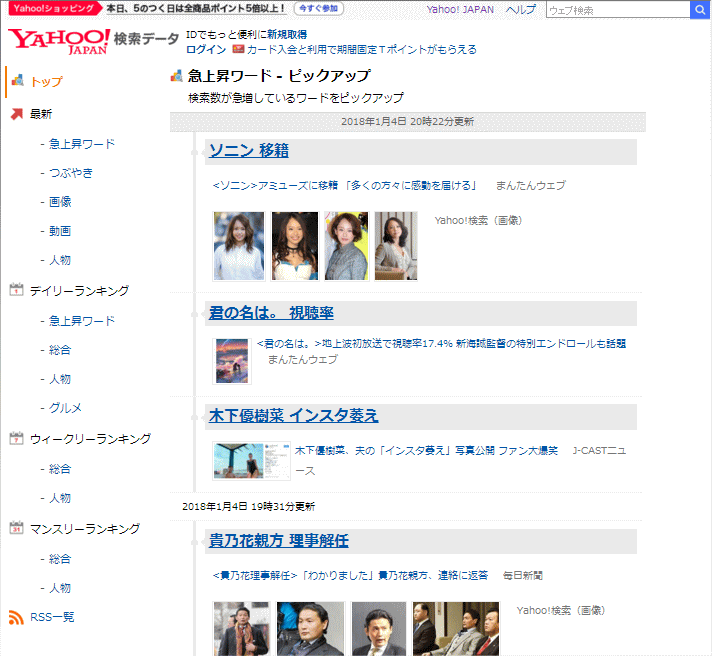
などで、
現在の検索で
急上昇しているキーワード
が見つかります。
最初はチャンネル登録者が、少ないですし、
なかなか再生が伸び悩む時は、
再生回数の秘訣は、「
キーワード
」
ということを思い出していただけると良いでしょう。
最初は、まずはキーワードをうまく拾い、
その動画をアップし、
再生回数を伸ばしてゆけば、
徐々にチャンネル登録者も増えます。
但し、
文字情報動画の場合は、
なかなかチャンネル登録は増えない傾向にあります。
また、
流行
を扱うために、
長い期間
再生回数を集められないことが多く、
一つ一つの動画が、
一発屋に終わる
傾向があります。
一つの動画で長く再生回数を集めたい場合は、
ペイントツールで描いた動画や、
読み聞かせなどが、地味ではありますが、
長く再生されます。
【６】あなたの儲かるジャンルを決める
ここまでの流れで、
あなたが
何を動画とすれば良いか？
何をすれば儲かるのか？
が、漠然とでもイメージができていると思います。
「鉄は熱いうちに打て」
と言いますが、
思いついたときが吉日です。
まずは、一刻でも早く取り掛かってみることをお勧めします。
と、言っても、
何でも
見込み発射
は良くありません。
「何でも手当たり次第にアップロードしてみれば良いのでは？」
とお考えの方もいらっしゃると思いますが、
その勢いは大切していただきたいですし、もちろん否定はしませんが、
まずは、一度冷静に
「自分が
どのジャンルの動画をメイン
にするのか？」
を
ここで決めたほうが良いのです。
と、いうのも、
例えば、
先ほどの紹介の動画で、
子供用のおもちゃの動画などがありましたが、
そのチャンネル内で、
ほかの動画は
「ミステリースポット潜入」
「モテる秘訣」
などなど、
そのチャンネルのイメージとかけ離れた動画をアップロードしていては、
視聴者側からすると、
「次の動画の
期待
」
ができなくなります。
もちろん無料で見ているのですから、
視聴者には一切負担はなく、痛手はありませんが、
やはり「
次の動画を楽しみにしたり、期待する
」からこそ、
チャンネル登録をしたり、
お気に入りにしたりするわけです。
宝くじやギャンブルのノリで、
「一発で再生数が上がって稼げればいい」
というお考えの方は、それでもいいですが、
やはり、
新作を出すたびに再生回数が増してゆく
チャンネルを育てていく
ほうが、
１回目のアップロードより、２回目のアップロード。
２回目よりも３回目。
と、徐々に登録者が増えていき、
新作を出すたびにある程度の再生数が見込めるほうが、
やっていて気持ちも楽ですし、
楽しく続けられる秘訣です。
それこそ、沢山のジャンルがありますので、
選り好みして目移りして、なかなか決まらないこともあると思いますが、
「自分がこれなら、ある程度
楽しく続けられる
」
と、感じるジャンルをいくつか候補を挙げてみてください。
もしも、決めきれず
ジャンルが複数あるならば、
その数分だけ、新しくチャンネルをご用意ください。
１つのアカウントで、
チャンネルはいくつでも作れますので、
おもちゃならば Ａのチャンネル。
読み聞かせならば、Ｂのチャンネル。
文字情報ならば、Ｃのチャンネル。
このように、予め決めた上で、
アップロード用の動画の作成にとりかかってください。
【７】動画をアップロードセット
動画ができましたら、
とにもかくにもアップロードしなければ、
何もはじまりません。
https://www.youtube.com/upload
から、
動画をアップロードします。
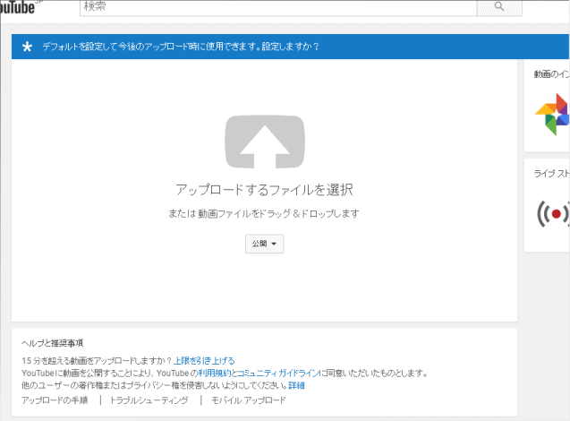
モバイルなどでアップロードする場合は、
https://support.google.com/youtube/answer/57407?hl=ja
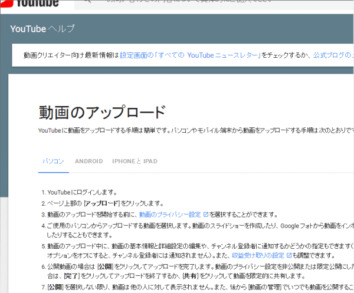
https://support.google.com/youtube/topic/2888648?hl=ja
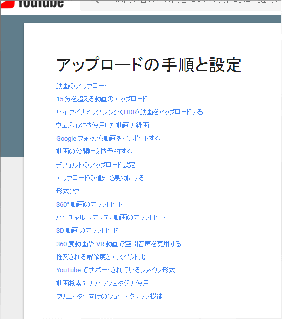
を
参考に操作してください。
【８】動画再生数を伸ばすには、ここが重要！
アップロードしましたら、
基本情報の画面が開かれます。
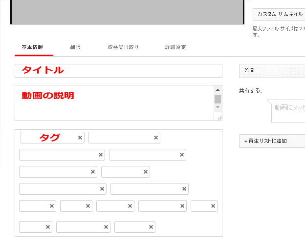
動画の内容も大切ですが、
再生数を伸ばすには、
ここが一番重要なポイントです。
前章の
「資金不要、顔出しなしで手っ取り早く稼ぐ」
でもお伝えしましたとおり、
視聴者が動画を見つけるには、
検索をするわけです。
ですから、
「
タイトル
」や
「
タグ
」、
動画の顔となる
「
サムネイル
」が重要ポイントとなります。
まずは、
タイトルに、どんな
キーワード
ならばヒットするか？
を
考慮しながら、記入します。
【９】再生数を大幅に伸ばすツール
タイトルにどのようなキーワードを入れるか？
迷う方は、
Google検索で、
「youtube サジェスト」
で、検索してみてください。
最近特に私も利用させていただいている
ツールで、
https://seoaffiliate.org/trend/
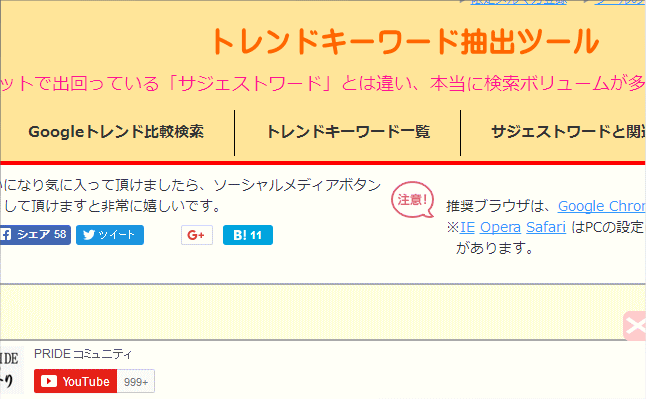
が、
便利です。
検索数の多いもの
を選べば、
当然再生数は大幅に伸びるわけです。
【１０】再生数を伸ばすテクニック
タグの部分ですが、
最近はあまり利用価値がないと巷では言われていますが、
このタグというものをうまく利用するか、
しないかで、
再生回数に大きな違いが出ます。
と、言うのも、
タグによって、
「
関連動画
」として紹介されるか？どうか？
が決まるからです。
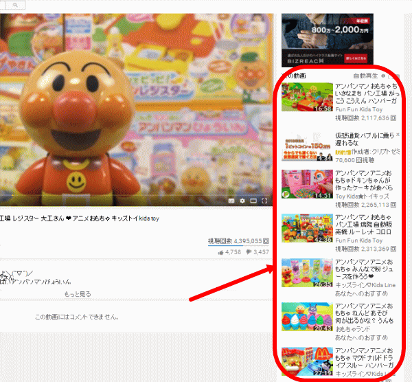
関連動画というのは、
先ほどの画像の右に映っているようなものを指します。
例えば、
あなたの動画が全くの無名であっても、
このように関連動画として表示されることによって、
視聴者の目に留まる確率があがりますので、
タグは実は重要です。
しかし、タグをどのように決めればよいか？
という点なのですが、
まずは、あなたのチャンネルＩＤを
１つ必ずタグとして使ってください。
チャンネルＩＤとは、
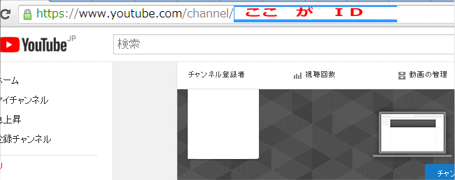
の、部分になります。
そして、
次はアップロードした、
キーワードで検索をしてみます。
できるだけ最近の動画で、
再生回数の多いものをクリックしてみます。
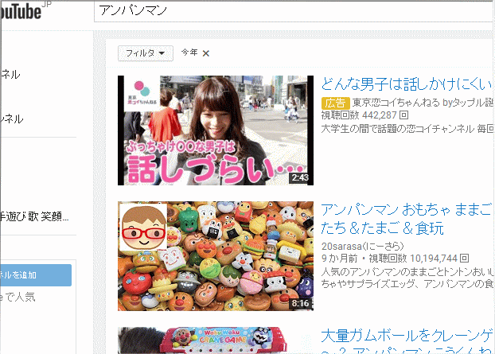
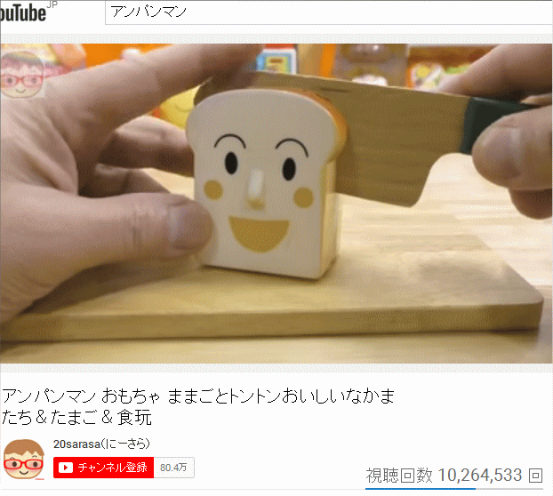
そして、
画面上で右クリックして、
ページのソースを開きます。
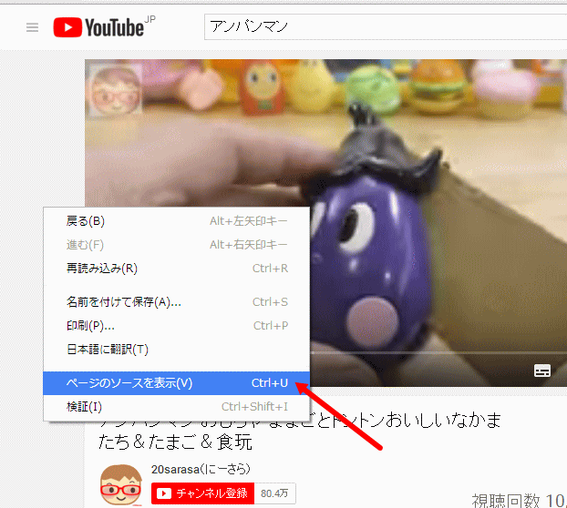
ソースの中を見て、
<meta name="keywords" content="
という箇所を探します。
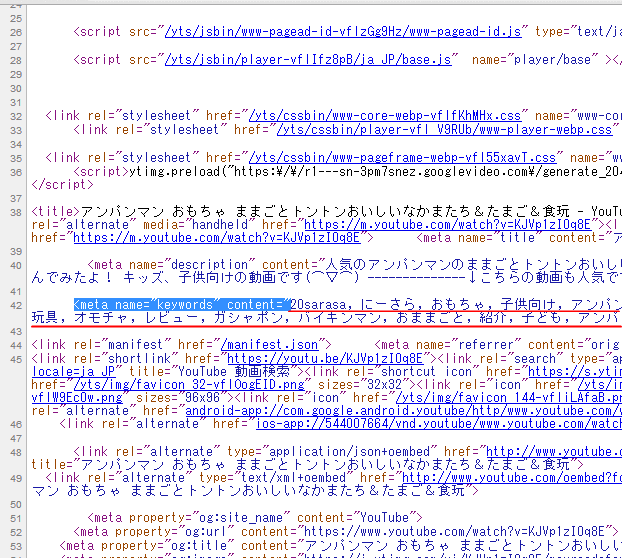
<meta name="keywords" content="
の以下
に書いてあるものが、
その再生回数の多い動画の
タグ
です。
その中から、いくつか利用してください。
これで、タグが決まりました。
タグを
たくさん入れれば入れるほど良い。
と勘違いをして、ペナルティーを受ける人もいますが、
タグはあまり入れすぎないように注意してください。
タグは、上限
１０個まで
とお考えください。
こうして、関連動画に表示させます。
表示させやすい方法は、
やはり
第
一
に、
関連性のある動画
。
そして、
二
に、比較的
新しい動画
。
三
に、
再生数が多い
もの。
四
に、まだ新しいユーザーで
チャンネル登録者数が少ない
もの
この
四点
を注意すれば、
関連動画欄に表示させることができます。
関連動画に表示させることによって、
まだ新規の無名だとしても、
うまくいけば
再生数を一気に伸ばすことが可能になります。
【１１】見落とさないで！この設定は必須です！
収益の受け取りには、
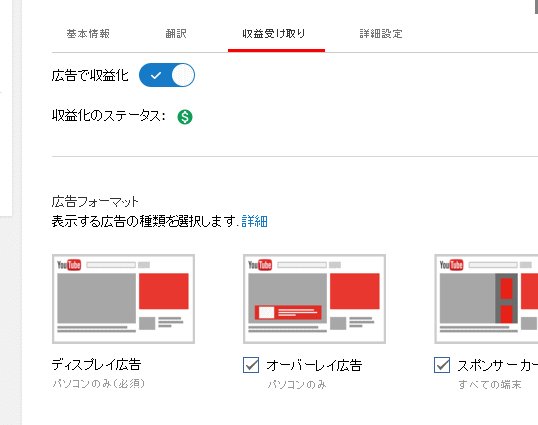
のように、
収益の受け取りの操作をしておかなければ、
いくら再生されたとしても、
無報酬となりますので、
ご注意ください。
そして、
アドセンスの契約
も忘れずに行ってください。
詳しくは、
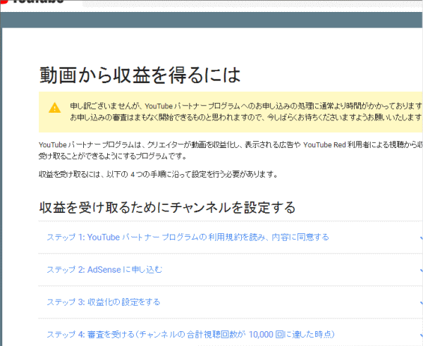
https://support.google.com/youtube/answer/72857?hl=ja
をご参考にされてください。
またはこちらで、赤裸々と解説しています。
https://www.youtube.com/watch?v=yhy8wrFs2eg
【１２】チャンネル登録や再生を伸ばす禁断の方法
これは、
あまりおすすめではありませんが、
アクセス急上昇の動画に表示させて、
人の目にたくさん触れさせて、
一気に
認知度を作り上げる方法
があります。
Googleにて、
「
トラフィックエクスチェンジ
」
で、
検索してください。
このようなサービスを使うと、
無料
、
または比較的安価に、
再生回数を吊り上げて、目立たせる
ことができます。
または、
ランサーズ
クラウドワークス
ココナラ
というサービス
で、
Youtubeの再生数や
チャンネル登録者数をアップさせるサービスもあります。
または、
ヤフオク
https://auctions.yahoo.co.jp/
「
YouTube 再生回数
」で
検索すると、
取引しているユーザーがいます。
その他、
https://www.doga.click/
https://www.k4m.tech/
など、
さまざまなサービスがあります。
ここでお伝えした方法は、
あくまでも自己責任でご利用ください。
あまり過度に利用すると、
アカウント自体をパーにしてしまう可能性もあります。
できれば、
焦らず
動画を作っていくことが最適です。
【１３】動画をアップロードする期日を気をつける
既にどのジャンルの動画をするのか？
などは、決まっていると思います。
あとは、毎日または、毎週、毎月など、
アップロードする期日を決めて、動画をアップロードするだけです。
毎日○時頃や、隔週○曜日など、
アップロードをする期日を決めて告知しておけば、
ファンになってくれたチャンネル登録者の「期待度」が増しますし、
テレビやラジオの番組と同じように、
「○日○時に○○という放送をしている」
と、楽しみにしてくれます。
アップロードする期日を決めて、動画をアップロードしてください。
しかし、まだはじめたばかりで、
なかなか再生数が上がらない
。
そして、やる気が低下してしまい、続かなくなる人が
零れ落ちてゆきます
。
では、それをどのようにして「
継続
」「
持続
」するか？
ここが勝負どころですが、
再生数が立ち
、
収益が見込めれば
、
「継続」「持続」
できます。
「いやいや。再生数が立てば続けられるだろうが。。そう簡単に言われても。。」
と反論したり、悲観的になる人もいらっしゃるかも知れません。
結論、ほとんどの人が「
再生数が立てば、続けられる
」わけです。
また、「
いつか自分も
」と、
前向きな希望を抱ける人
は、途中で挫折することなく、
継続できる
わけです。
前者のように、
「再生数がすぐ立たなければ
気持ちが折れてしまう
」人は、
必ず
文字情報用の動画のアカウント
を
ひとつ
だけはご準備して、
まずは文字情報の動画を毎日アップロードされることをおすすめ致します。
上昇中のキーワード
を確認して、
その記事を調べて、
自分なりに文章化
し、
動画にしてアップロードしてください。
前章まででも解説しましたが、
この方法ですと、
チャンネル登録者はなかなか増えませんが、
再生数はとてもよく上がります
。
このようにして、別のジャンルで再生数を稼ぎつつ、
気持ちを高め
、
本命のアカウントの
継続するのがベスト
です。
また、文字情報用の動画から
本命のアカウントにリンクを貼り、
自分で自分に紹介する方法もあります。
その場合は、
文字情報用の動画の
説明文に、
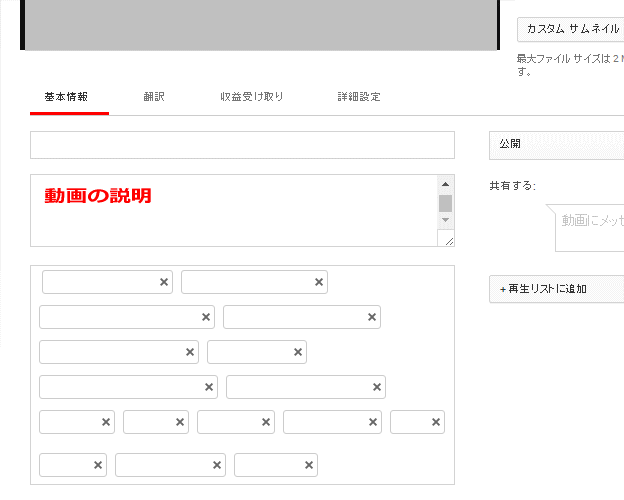
「
他にも
おもちゃ動画チャンネルをしています！ 毎日更新中！ コチラ→ https://www.youtube.com/channel・・・
」
などとすれば、
多少は、
別のアカウントにも再生数が流れます。
【１４】再生数を伸ばすアップロードの時間帯
動画をアップロードするには、
それを視聴する人がどんな時間帯で生活しているのか？
それに合わさなければいけません。
例えば、人気ユーチューバーのヒカキンさんなどは、
「
子供
」をターゲットにしています。
つまり、子供が学校から帰宅してからの時間や、
塾から帰った時間などに合わせるわけです。
動画を深夜３時など、人が
寝静まった時間にアップ
しても、
いくら頑張っても、再生数は伸びませんし、
いつまでもファンもつきません。
自身が扱う
ジャンルに合わせた時間帯
をよく考えて、
その
時間帯に合わせてアップロード
をするようにしましょう。
【１５】ネタを考えなくていい！真似するだけ！
ネタを考えて、作る
。
このようなサイクルで早期に
ネタ切れ
を起こす人がいます。
そして、
継続ができなくなる
のです。
そうならない為にも、
普段から、
Youtube動画を見ては、
「これは凄い再生だな」
「これは面白いな」
または、
「これ、なんて残念な人だろう」
など、
良いもの
や、
あまりにも
残念な結果なもの
を
スクリーンショットなどを撮影したりして、
保存しておく
ことをおすすめします。
ネタが切れたときに、
それらが必ず役に立ちます。
ネタを考えるでは、自身の感性やアイデアを搾り出すだけですから、
いつか切れます
が、
「良いもの」を参考にして、
自分なりにグレードアップする
という方法で行えば、
ネタは無数に存在します
ので、
ネタ切れを起こすことはありません。
要するに、オリジナルで「世界に自分だけが創った！」というものを
わざわざ作ろうとせず、
真似て、より良いものに仕上げるという感じで行えばいいのです。
しかし、真似といっても
そのまま真似たりなどは、
タイトル文章や説明文、もちろん動画など
著作権などがありますので、
法律に違反して捕まるような「真似」ではなく、
あくまでも、「大人」としての健全な真似を心がけてください。
【１６】おわりに
その他テクニックは多数ありますが、
本書では、前書きでお伝えしました通り、
はじめての人でも再生数を上げる
ことを中心に解説しました。
おもちゃやペットなど。
顔出しなく、声だしもなく、
再生数を稼げるジャンルは山ほどあります。
しかし、あなたが「
楽しんで
」できることをしてください。
継続
がやはり一番大切ということを忘れないでください。
本文でも解説しました通り、
タイトル
と、
タグ
、
サムネイル
の画像さえピントが合っていれば、
１つの動画
をアップすれば、
１万円、２万円くらいならば簡単
にプラスの収入になります。
たくさん収入が欲しい人は、
欲しいと思っている
目的の金額分の動画数をアップロードすれば、
動画数に比例して収入が伸びます。
本文で
不労所得
の解説に、
年金などの話を書きましたが、
定年
６５歳
までには、
３５００万円
は最低
貯金をしておかなければ
、
老後は生活できない
のが、
今の日本の状態です。
「３５００万円も必要あるものか！」
という方もいますが、
人は、どんなに節約しても、
年間２００～３００万円
程度は、
生活費で消費します。
保険税、水道光熱費、家賃、
などなど、
何もしなくてもお金はかかります
。
現在の平均寿命は
８０歳
ですから、
定年を迎えてから
１５年
もあります。
８０歳まで生きたとすれば
何もしなくても、
慎ましく節約生活をして、
惨めを我慢して、
年間２００万円で収まったとしても、
３０００万円の現金が必要
ということです。
年金もあてになりません。
８０歳、死ぬまで現役で元気に
働き続けるだけの
体力、知力、精神力
があれば問題ないですが、
人は年齢を重ねるこどに、
目が見えなくなったり、
体調を崩したり、衰えたりは、
避けて通れませんし、
働きたいと自分が望んでも、
雇い主が首を横に振れば、
仕事にありつけませんし、そしてお金も入りません。
あなたが何歳の方かは、私には分かりませんが、
自分の年金を
自分で蓄えておく
ように、
必ず来る老後を見据えて、
お金を蓄えていくようにされてください。
Youutbeはこれから何年、このような収入が得られる仕組みがあるかは定かではありませんし、
規定も変われば、
すべてが変わります
。
しかし、現在Youutbeで自己資金を使わず、楽しんで稼げて収入になっているのは確かです。
稼げるうちに、うまく副収入として得て
、
将来のための糧
にしていただければと思います。
お読みいただきありがとうございました。
2018,1,8
Youtube 誰でも儲かります！
著者 森本ゆうや
【１７】特典（おまけ）
●これで簡単に継続
https://www.youtube.com/watch?v=L6ovJt6cN8M
この辺りを見れば、
あなたのやる気も継続できるでしょう。
●あなたの動画が再利用されていたりなど
YouTube での著作権
https://www.youtube.com/intl/ja/yt/about/copyright/#support-and-troubleshooting
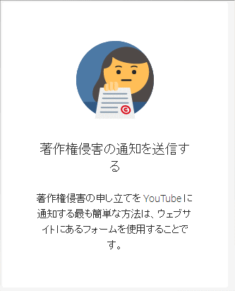
こちらに連絡すればいいです。
●動画などのツール
動画の編集やサムネイルの画像を作るには、
こちらがおすすめ。
写真素材
http://www.ashinari.com/
効果音
https://soundeffect-lab.info/
モザイクソフト
http://www.mojimaru.com/crop/
動画編集ソフト
https://www.macxdvd.com/blog/excellent-how-to-use-movie-editor-avidemux.htm
●本書解説でアップロードの仕方などで分からない場合
は、
https://support.google.com/youtube/answer/57407?co=GENIE.Platform%3DDesktop&hl=ja
https://www.youtube.com/watch?v=O1slFYR0KlY
https://www.youtube.com/watch?v=PwIhByYm7h4
https://www.youtube.com/watch?v=kus8VoPG4vU
https://www.youtube.com/watch?v=vy1r5_RGlx0
https://www.youtube.com/watch?v=nA8IY9m9IFs
●チャンネル登録を自力で増やす
おすすめは致しませんが、
とうしてもという方はどうぞ。
https://matome.naver.jp/odai/2141259316812617601
http://9314.teacup.com/dougachanneru/bbs/t24/l50
https://web.lobi.co/group/79f7b37248b9fd5b9092ba753b0a0b078170eb36
●チャンネル登録を増やす
もしも、あなたが動画をアップされて、
一人でも沢山の人に見てもらいたいと思われるなら、
筆者も今後もあなたを応援したいと思いますので、
https://goo.gl/QoUBgR
作成された後、
https://goo.gl/qndZph
に、
「件名」に → Youtube 誰でも儲かります！
「本文内容」に、
・あなたのチャンネルＩＤ
・動画をはじめた年月日
・どんなことをメインにしているのかＰＲ
と、
もしよければ、本書のご感想をお願いできれば嬉しいです。
メッセージを送ってくだされば、
宣伝のご協力なども、
無料で行っております。
宣伝を開始する際には、
ブログのメッセージにて返信いたしますので、
メッセージをチェックできるようにしておいていただければと思います。
その他、
http://group.ameba.jp/group/lbRP99HVyHVJ/
も、ご活用ください。
ちなみに当方からの
セミナーや、その他セールスは行っていません。
後発でYoutubeをはじめた人、
またはなかなか再生回数が伸びない人を応援して、
筆者自身もその動画を純粋に楽しませていただきたいと思っているだけです。
再生回数を伸ばし、チャンネル登録をグンと増やすには、
やはりuuumに応募して採用されるのが
一番の近道でしょう。
やはりどんなことでも、バックがあるかないか？
ここが、一番重要だと思います。
しかし、
Youtubeを
はじめたばかりや、お小遣い稼ぎなどでの方は、
ユーチューバーが所属する事務所uuumに
応募しても審査に間違いなく通りません。
uuumには所属はできないし、
かといって後ろ盾などのバックサポートも、
力を貸してくれる仲間も少ないという人は
自力しかありません。
そういった人を応援したいと思っています。
トップユーチューバーには敵わないけれど・・・
という人で、
uuumのような事務所ではない、
単なる仲間が繋がれば、
クリエイトの情報交換などもできそうですし、
人数が多ければ、いつかオフ会などもできたら面白いかなと思っています。
●ここは気をつけて！Youtube
https://www.youtube.com/watch?v=Se68WGsQrVU
以上で終わります。
ありがとうございました。